Afterword
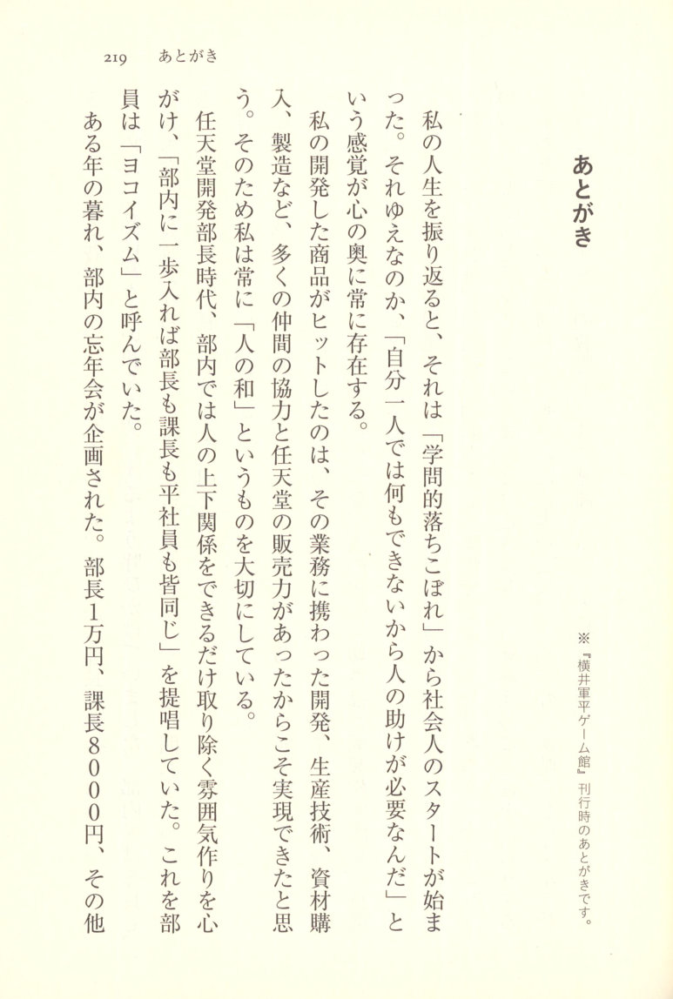
p.222 Afterword
This is the afterword from the original publication of Gunpei Yokoi Game Kan.
Looking back on my life, my working life began as "an academic dropout." Perhaps because of that, the feeling that "I can't do anything on my own, so I need the help of others" has always existed deep in my heart.
The reason the products I developed became hits was that they were made possible through the cooperation of the many colleagues involved in the work — development, production engineering, materials procurement, manufacturing, and more — combined with Nintendo's sales power. That is why I have always valued what I call "harmony among people."
During my time as head of Nintendo's development department, I made it a point to create an atmosphere within the department that eliminated hierarchical relationships as much as possible, advocating the principle that "once you step inside the department, the department head, section chiefs, and rank-and-file employees are all the same." The staff called this "Yokoism."
One year toward the end of the year, a department year-end party was planned. The department head would contribute 10,000 yen, the section chief 8,000 yen, and the others  p.223 the others contributed 5,000 yen. At the opening of that year-end party, the emcee called on the department head to give a greeting, and I launched into a little speech. "I have always called on everyone to value harmony among people. Within the department, I have encouraged us all to be equals — no department head, no section chiefs — and that spirit has created a warm and friendly atmosphere in our department... And yet the department head's contribution is 10,000 yen?! What's that all about?!"
p.223 the others contributed 5,000 yen. At the opening of that year-end party, the emcee called on the department head to give a greeting, and I launched into a little speech. "I have always called on everyone to value harmony among people. Within the department, I have encouraged us all to be equals — no department head, no section chiefs — and that spirit has created a warm and friendly atmosphere in our department... And yet the department head's contribution is 10,000 yen?! What's that all about?!"
Needless to say, the staff who had been listening with solemn expressions all fell over laughing.
How lucky it is that a dropout like me could have a book like this published. When I think back on it, it all began with being taken in by Nintendo president Hiroshi Yamauchi. I learned the know-how of development from Suezou Sawai, who was then Nintendo's managing director, and the importance of harmony among people was something I owe entirely to the influence of Nio Momose, head of the Momose Manufacturing Plant.
Furthermore, the development of the Game Boy could never have been realized without the two men who were then development section chiefs — Yoshihiro Taki and Takehiro Izushi — who carried on their unglamorous research for over a year. I would like to express my heartfelt thanks to all of them now. And I pray for the repose of the late Sawai and Momose.
Finally, I would like to offer my deepest gratitude to Tōta Enomoto, who conceived and planned the publication of this book, and to writer Takefumi Makino, who brought it to life with wonderful prose that resonates with readers.
p.224 April 1997
Gunpei Yokoi
 p.225 Forgetting, Then Remembering: "Gunpei Yokoi"
p.225 Forgetting, Then Remembering: "Gunpei Yokoi"
Takefumi Makino
Nearly twenty years have passed since Gunpei Yokoi died. Over these twenty years, the world of play has changed at a dizzying pace.
Nintendo continued its rapid advance with the Wii and the Nintendo DS, creating a distinctly different kind of play with "Wii Fit" and "Brain Training." When that boom subsided and Nintendo began thinking about what the next form of play would be, Film Art Inc. approached us in 2010 about reissuing Gunpei Yokoi Game Kan.
Subsequently, Nintendo created new forms of play with the Nintendo 3DS, including stereoscopic 3D. Million-seller titles appeared one after another — "Animal Crossing: New Leaf," "Pocket Monsters," "Yo-kai Watch," and others. And now, the main battlefield of gaming is shifting to smartphones, and the world of play is on the verge of a major transformation. At that point, Chikuma Shobo approached us, and  p.226 the decision was made to include this book in the Chikuma Bunko library.
p.226 the decision was made to include this book in the Chikuma Bunko library.
Even when people are on the verge of forgetting him, whenever a turning point comes in gaming, the world strangely finds itself thinking of Yokoi again, wanting to hear his voice once more.
This book, too, has been one that is nearly forgotten, then remembered again. In 1996, Yokoi left Nintendo and established Koto Co., Ltd. Now unencumbered, he gladly agreed to our interviews, and we made numerous trips to Kyoto to conduct lengthy interview sessions. The results were published by Aspect Inc. as Gunpei Yokoi Game Kan. The reception was excellent, but unfortunately it did not become a bestseller, and as happens with so many books, within a few years it was effectively out of print.
Some time after that, a strange rumor began reaching our ears: the book was being bought and sold on online auctions for 80,000 yen. I don't believe it actually sold at that price, but I did see it listed at 80,000 yen with my own eyes. Whenever I had the chance to meet people in the game industry, nearly all of them had read this book and praised it highly. They said the book was packed with fundamental ways of thinking that every game creator ought to 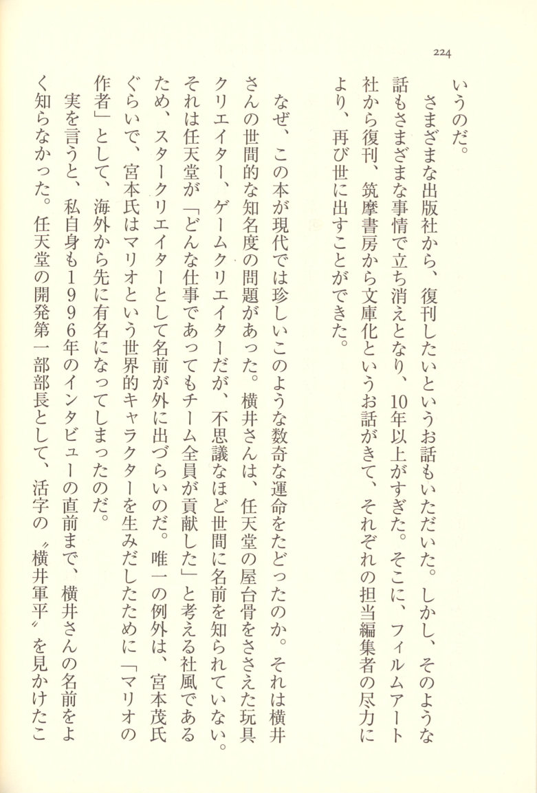
We received offers from various publishers wanting to reprint it. However, for various reasons, those talks all fell through, and more than ten years passed. Then Film Art Inc. offered to reissue it, and Chikuma Shobo offered to publish it as a bunko paperback. Thanks to the efforts of the editors in charge at each publisher, the book was able to see the light of day once more.
Why did this book follow such a remarkable and unusual fate in the modern era? Part of the reason had to do with Yokoi's level of public name recognition. Yokoi was the toy and game creator who supported the very backbone of Nintendo, yet strangely, his name was hardly known to the general public. This was because Nintendo has a corporate culture that holds "no matter what the work, the entire team contributed," making it difficult for the names of star creators to become publicly known. Virtually the only exception was Shigeru Miyamoto. Miyamoto became famous abroad first, because he created the globally recognized character Mario and thus became known as "the creator of Mario."
To tell the truth, I myself barely knew Yokoi's name until just before the 1996 interviews. I had seen the printed name "Gunpei Yokoi" in his capacity as head of Nintendo's R&D1 division, but  p.228 that was about the extent of it. When Tōta Enomoto of ASCII caught wind that Yokoi had apparently left Nintendo and was starting his own company, he contacted me and said, "I'd like to interview Yokoi. I'd appreciate your cooperation." My honest reaction at the time was, "If it's an interview with a Nintendo developer, surely there are plenty of Nintendo-savvy enthusiasts out there who'd be better suited than me."
p.228 that was about the extent of it. When Tōta Enomoto of ASCII caught wind that Yokoi had apparently left Nintendo and was starting his own company, he contacted me and said, "I'd like to interview Yokoi. I'd appreciate your cooperation." My honest reaction at the time was, "If it's an interview with a Nintendo developer, surely there are plenty of Nintendo-savvy enthusiasts out there who'd be better suited than me."
However, when I looked into Yokoi on my own, I was so astonished I nearly fell off my chair. If he had merely developed nostalgic toys like the Ultra Hand and the Light Gun, I wouldn't have been so surprised. But here was a man who had been a toy creator and then went on to develop game hardware like the Game & Watch and the Game Boy, and on top of that, had even developed game software starting with Versus Tetris. Someone from the analog world was also thriving in the digital world. "Are there actually two people named Gunpei Yokoi?" I wondered, hardly believing my own eyes.
There are plenty of talented toy creators who produced excellent toys at toy companies other than Nintendo. There are plenty of developers and creators at electronics companies outside Nintendo who have produced excellent game consoles and game software. But when it comes to someone who excelled in both toys and game hardware, in both analog and digital — I don't think there was anyone other than Yokoi.
 p.229 Probably no one like him anywhere in the world.
p.229 Probably no one like him anywhere in the world.
It was then that I understood the reason Enomoto had asked me to conduct the interview. More than detailed behind-the-scenes stories or episodes about individual products, what Enomoto wanted to bring to the forefront in "Gunpei Yokoi Game Kan" was the way of thinking and the creative philosophy behind the works. I, too, was strongly drawn to that.
That said, if Yokoi came across as lecturing from on high about his philosophy of game design and creative thinking, it would ruin the effect of his stories. What I wanted was a book where, on the surface, Yokoi seems to be cheerfully reminiscing about the old days, but when you read more carefully, a profound philosophy rises from between the lines — one that makes you want to sit up and take notice. A book where the first time you read it, it feels like nostalgic retro toy stories, and the second time, you find yourself touching the very essence of creativity. That was the kind of book I wanted to make.
Of course, that is a self-serving wish on the part of the creator, and I think readers should simply enjoy reading without worrying about anything difficult. However, since this is an interpretive commentary, I would like to introduce a few episodes that may serve as hints for further understanding Yokoi's way of thinking.
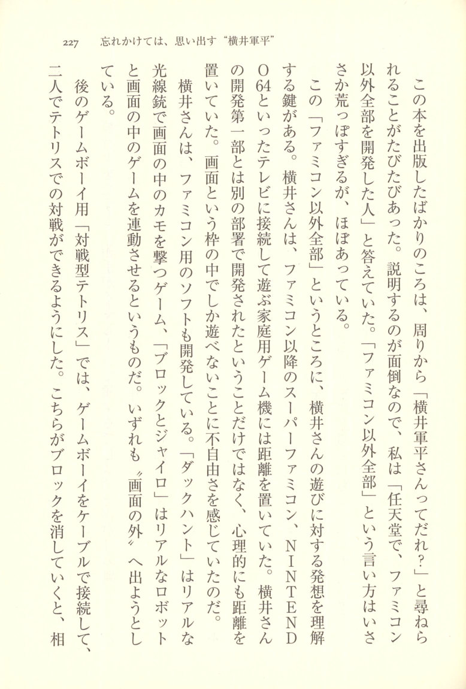
Within this "everything except the Famicom" lies the key to understanding Yokoi's approach to play. Yokoi kept his distance from the home game consoles that came after the Famicom — the Super Famicom, the Nintendo 64, and other television-connected home gaming machines. It wasn't just that they were developed by a different division from his Development Division 1 — he felt a psychological distance from them as well. He felt constrained by the limitation of only being able to play within the frame of a screen.
Yokoi did develop software for the Famicom as well. "Duck Hunt" was a game where you used a realistic Light Gun to shoot ducks on the screen, and "Block & Gyro" used a realistic robot that interacted with the game on screen. Both were attempts to break "outside the screen."
For the later Game Boy title "Versus Tetris," two Game Boys were connected with a cable so that two players could compete against each other. As one player cleared blocks, the  p.231 nuisance blocks would appear on the opponent's side to interfere with them — an attack-style versus Tetris.
p.231 nuisance blocks would appear on the opponent's side to interfere with them — an attack-style versus Tetris.
When two Game Boys were connected by cable for versus play, the two players would naturally end up facing each other. "When you send nuisance blocks, you can see your opponent's frustrated expression out of the corner of your eye. That's what makes it so irresistibly fun," Yokoi would say.
The Virtual Boy, which was a commercial failure, is often discussed in connection with stereoscopic vision, 3D, and virtual reality, but Yokoi rejected that kind of framing. What he had wanted to achieve with the Virtual Boy was to create an "infinitely expansive game field." This, too, was a challenge to break outside the frame of the screen.
Yokoi seemed to feel a certain unease with home game consoles that carved out a rectangular frame and confined play within it. I think his continued creation of portable game machines — the Game Boy and later the WonderSwan — was an unconscious attempt to take the game machine outside, hoping that some kind of chemical reaction would occur between the small game screen and the outside world.
If Yokoi were still alive and had seen things like GPS-equipped smartphones and drones, he would surely have been the first to become completely absorbed in them, and he would have given shape to his ideal world of play.
 p.232 Yokoi was a great play creator, but he was also an organization man — someone who operated within the framework of Nintendo. And there were times when I felt he was a truly first-rate person as an organization man, too.
p.232 Yokoi was a great play creator, but he was also an organization man — someone who operated within the framework of Nintendo. And there were times when I felt he was a truly first-rate person as an organization man, too.
Starting around the time of Game & Watch, the scale of the business grew larger, and Yokoi stepped back from the front lines, increasingly taking on direction and management work — delegating development to his subordinates. It was from around this time that Yokoi began to carry a great burden of worry. For a creator, being pulled away from the front lines and losing time to make things is a major source of stress, but even greater than that was the worry of "how can I best draw out the abilities of my subordinates?" And on top of that, because Nintendo had grown too large, the only new projects that would be approved were ones expected to generate sales on the scale of tens of billions of yen. He had to look after those below him while pressure bore down from above. It may be hard to believe, but during this period Yokoi was so troubled that there were many days when the smile disappeared from his face. This is not merely my own speculation — there are corroborating accounts from multiple independent sources, and while I deliberately chose not to include them in Gunpei Yokoi Game Kan, within the interview tapes there are portions where Yokoi himself speaks of that pain.
 p.233 Yokoi made his workplace feel like a festival, creating an environment where subordinates could think freely and speak their minds without restraint. He created a "Yokoism" workplace with no hierarchical barriers. Every day felt like the eve of a school festival — he drew out the creative potential of every team member, shaped their ideas into concrete form, and brought projects worth tens of billions of yen to completion. The pressure on Yokoi must have been immense. One of the reasons he left Nintendo and founded Koto was that he wanted to be involved in small, easygoing projects.
p.233 Yokoi made his workplace feel like a festival, creating an environment where subordinates could think freely and speak their minds without restraint. He created a "Yokoism" workplace with no hierarchical barriers. Every day felt like the eve of a school festival — he drew out the creative potential of every team member, shaped their ideas into concrete form, and brought projects worth tens of billions of yen to completion. The pressure on Yokoi must have been immense. One of the reasons he left Nintendo and founded Koto was that he wanted to be involved in small, easygoing projects.
On one occasion, I had the chance to speak with some students who aspired to become game creators, and a game creator who had actually worked under Yokoi was also present. The conversation turned in the direction of: "The game industry today puts too much emphasis on the work aspect, and there's not enough fun. If the creators themselves aren't having fun, there's no way they can make interesting games." I think there's truth in that, but in reality, creators cannot ignore the business side either. How to mesh creativity and business effectively — I believe that, too, is one of a creator's abilities, or at least should be.
So I said something like, "But even though people say Yokoi's R&D1 department was like a festival every day, behind the scenes Yokoi himself was feeling enormous pressure." Then, 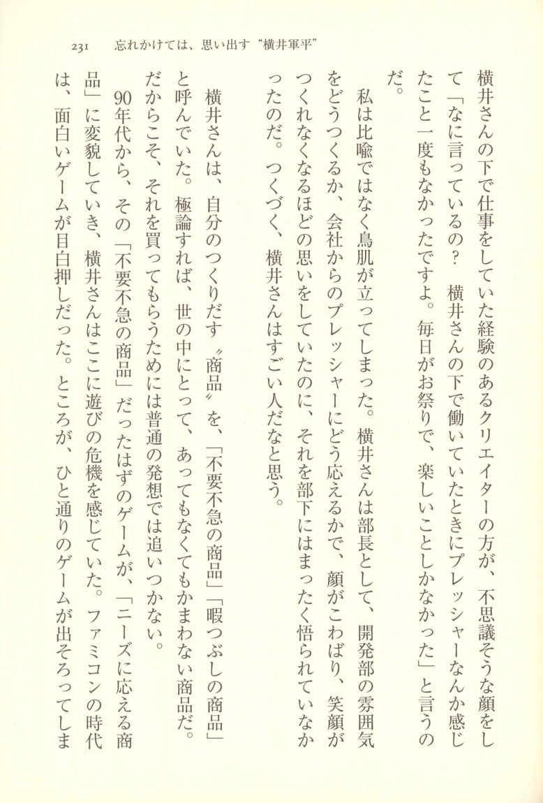
I'm not speaking metaphorically — I literally got goosebumps. As a department head, Yokoi had been agonizing over how to create the right atmosphere in the development department and how to respond to the pressure from the company, to the point where his face would stiffen and he couldn't even manage a smile. And yet his subordinates had been completely unaware of any of it. I truly think Yokoi was an extraordinary person.
Yokoi used to call the products he created "non-essential, non-urgent goods" — in other words, "time-killing products." To put it in extreme terms, they were products the world could do with or without. And precisely because of that, getting people to buy them required thinking that went beyond ordinary ideas.
Starting in the 1990s, however, games — which were supposed to be these "non-essential, non-urgent goods" — transformed into "products that respond to needs," and Yokoi sensed a crisis in play itself. During the Famicom era, there had been one great game after another. But once the full range of games had been  p.235 explored, the game industry responded to user demand by boosting hardware performance, increasing screen resolution, and making game content more complex. Nintendo, too, answered those needs, evolving through the Super Famicom, the Nintendo 64, and the GameCube. With each new generation, the number of units sold decreased, and the gaming population shrank. Because the amount each individual spent on software increased, the game industry's revenues continued to grow — but in truth, as a culture, it was narrowing. Yokoi was worried about this, and he argued that it was necessary to think about returning once more to the starting point of play.
p.235 explored, the game industry responded to user demand by boosting hardware performance, increasing screen resolution, and making game content more complex. Nintendo, too, answered those needs, evolving through the Super Famicom, the Nintendo 64, and the GameCube. With each new generation, the number of units sold decreased, and the gaming population shrank. Because the amount each individual spent on software increased, the game industry's revenues continued to grow — but in truth, as a culture, it was narrowing. Yokoi was worried about this, and he argued that it was necessary to think about returning once more to the starting point of play.
This was a trend that many people must have felt firsthand. People who had played Famicom games endlessly as children would say things like, "Games are a waste of time, so I don't play them anymore." Others would say, "Now that I'm an adult, I'm too busy to find time for games." But all of this is a lie. If something is truly enjoyable, people can make time for it no matter how busy they are. In the end, games had simply stopped being fun, and people could no longer feel that they were worth making time for.
Take, for example, what are called fighting games. You control your own character,  p.236 and pit it against a CPU-controlled character in martial arts combat. The point of these games lies in how well you can time and execute special moves. These special moves can be performed by manipulating the lever and buttons in specific ways. A jump-type special move, for instance, might require "pushing the lever up twice while simultaneously pressing the kick button."
p.236 and pit it against a CPU-controlled character in martial arts combat. The point of these games lies in how well you can time and execute special moves. These special moves can be performed by manipulating the lever and buttons in specific ways. A jump-type special move, for instance, might require "pushing the lever up twice while simultaneously pressing the kick button."
These kinds of special move inputs are something you discover by accident while playing. There is joy in discovering a special move, and your skill improves as a result. This is where the fun of play lies.
However, as developers responded to user demand, special move commands grew increasingly complex. They reached the point where you had to "push the lever up once, left twice, press the kick button and punch button simultaneously, then press the kick button while pushing the lever up" — that sort of thing. If the lever controlled the character's posture — up for jump-type special moves, down for crouch-type special moves — then you could still stumble upon them by accident during play. But once the commands became this complex, accidental discovery was simply no longer possible.
Instead, everyone would read the gaming magazines that went on sale the same day as the software, memorize the special move commands printed in them, and then sit down to play.
Back in the Famicom era, children — and even adults — were absorbed in games.
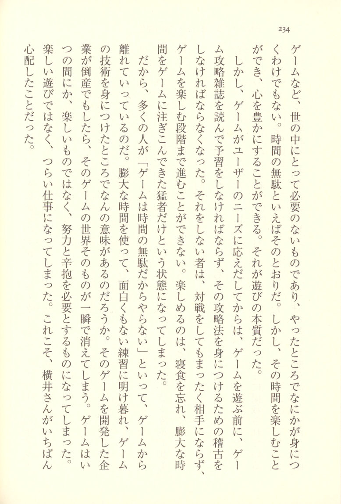
However, once games began catering to user demand, before you could even sit down to play, you had to study strategy magazines and prepare, and you had to practice to master the techniques described in them. Those who didn't do this were completely outmatched in versus play and could never reach the stage where the game was actually fun. The only ones who could enjoy it were the hardcore devotees who forgot to eat and sleep, pouring enormous amounts of time into the game.
And so, many people said "Games are a waste of time, so I don't bother," and drifted away. After spending enormous amounts of time grinding through tedious, joyless practice to acquire gaming skills — what was the point? If the company that developed the game went bankrupt, that entire game world would vanish in an instant. Before anyone noticed, games had ceased to be something enjoyable and had become something requiring effort and endurance. They were no longer fun play — they had become grueling work.
This was precisely what Yokoi had worried about most.
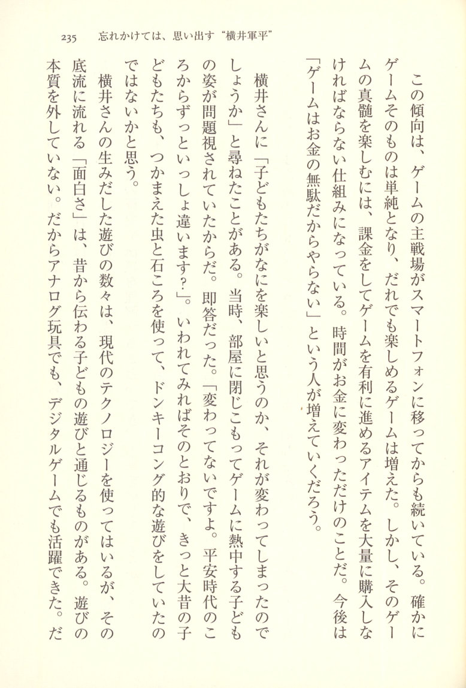
Forgetting and Remembering "Gunpei Yokoi"
I once asked Yokoi, "Has what children find fun changed?" At the time, the sight of children shutting themselves in their rooms and becoming absorbed in games was being seen as a problem. His answer was immediate. "It hasn't changed at all. It's been the same since the Heian period, hasn't it?" When he put it that way, it made perfect sense — surely children in ancient times were using captured bugs and pebbles to engage in something like Donkey Kong-style play.
The many forms of play that Yokoi created do use modern technology, but the "fun" flowing beneath them connects to the play of children handed down since long ago. He never lost sight of the essence of play. That is why he was able to thrive with analog toys and digital games alike.
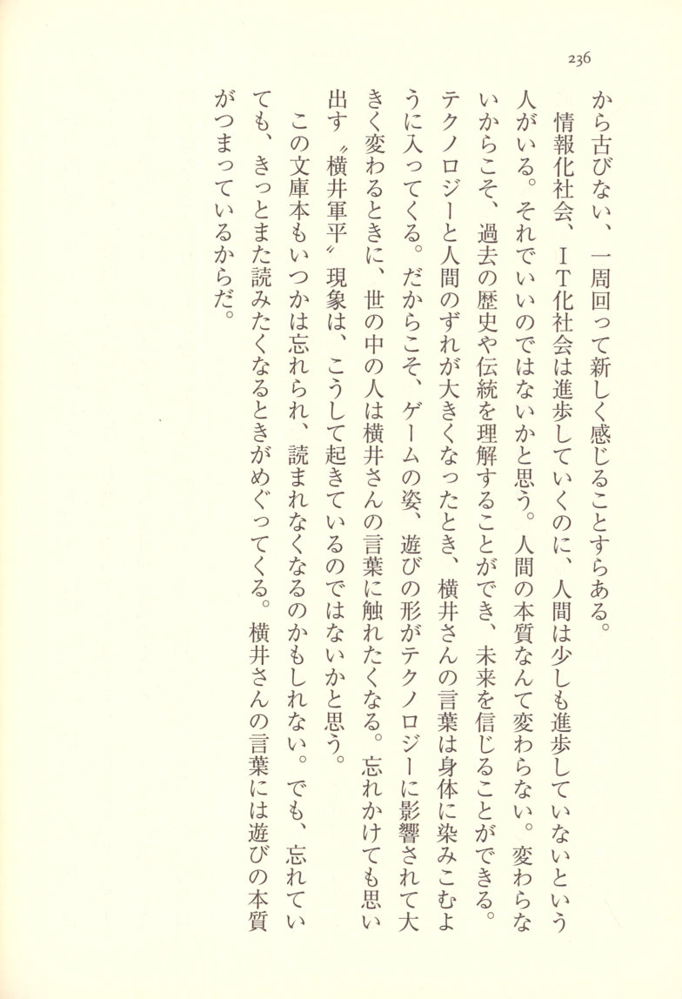
Some people say that while our information society and IT society keep advancing, human beings haven't advanced in the slightest. I think that's perfectly fine. Human nature doesn't change. Precisely because it doesn't change, we can understand the history and traditions of the past, and we can believe in the future. When the gap between technology and human nature grows wide, Yokoi's words seep into your body and settle deep within you. And that is precisely why, when the shape of games and the form of play are dramatically transformed by technology, people in the world find themselves wanting to encounter Yokoi's words again. Even when they've nearly forgotten — they remember. I believe this is how the "Gunpei Yokoi" phenomenon keeps occurring.
This paperback, too, may someday be forgotten and go unread. But even so, the time will surely come around again when people want to read it. Because Yokoi's words are packed with the very essence of play.
 p.240 Commentary
p.240 Commentary
Bourbon Kobayashi
The phrase "a death too soon" is used often. Measured against average life expectancy, more than half of all humanity meets an "early death."
Even if the person isn't close to you, it is a sad thing when someone somewhere dies. And if it is the "early death" of someone you like, someone you respect, it must be all the more regrettable.
But I wonder about that. After all, everyone dies.
Within the equal condition that anyone might die suddenly, everyone is living "desperately" — in the original sense of the word, as if their lives depend on it. So I sometimes think that a person who lived long enough to leave an impression on others — to be "liked" or "respected" — well, isn't the mere fact of having left that impression enough? (I realize this is a cold thing to say — or rather, before being cold, it's a lonely way of thinking.)
That is why, callous as it may sound, there are almost no deaths that make me lament, "It was a death too soon!"
 p.241 If It Were Yokoi-san
p.241 If It Were Yokoi-san
Tezuka Osamu, whom I deeply respect, and Fujiko F. Fujio both died at barely sixty — deaths that came too "early." John Lennon was forty, Bob Marley thirty-six when they left this world. Had they gone on living, they might still be producing great works for us today.
It is certainly a shame. But toward them, I also have the real sense that "they showed us how they lived, to a certain degree."
Yet even for someone like me, there are people I truly wish hadn't died. Nancy Seki and Gunpei Yokoi. Seki as a television and entertainment critic, and Yokoi as a creator of games and game hardware — both left behind outstanding "works." But the feeling I have goes beyond simply having been left outstanding works. Years after their deaths, something still lingers. In the sense that their "nen" — their unfinished will — still "remains," it is truly "regrettable" (zan-nen).
"What would Yokoi-san have said?" "What would Yokoi-san have made?" In all sorts of situations, the thought suddenly strikes me — like imagining the branches that never evolved on the tree of life. For the kind of work that sends branches forking out from the trunk, you need to grow great roots, the way John Lennon and Tezuka did — 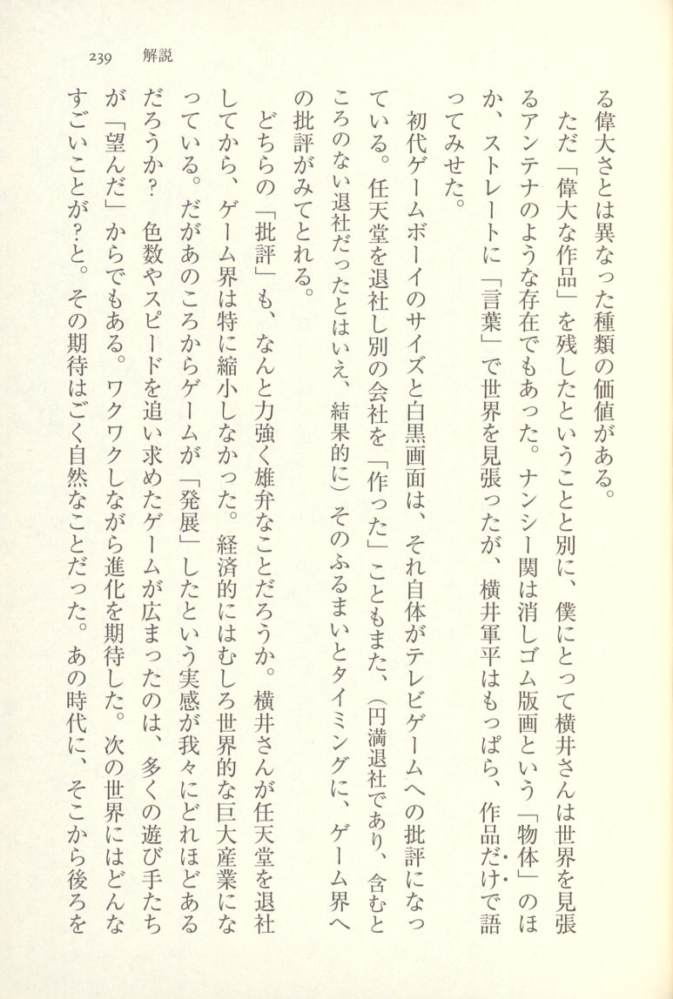
But apart from having left behind "great works," for me Yokoi-san was also an antenna-like presence who kept watch over the world. Nancy Seki kept watch over the world through the "object" of eraser-print art and also straightforwardly through "words," but Gunpei Yokoi spoke exclusively through his works alone.
The size and monochrome screen of the original Game Boy were themselves a critique of television games. The fact that he left Nintendo and "founded" a separate company was also — even though it was an amicable departure with no hard feelings, in the end — something whose manner and timing contained a visible critique of the game industry.
How powerfully and eloquently those "critiques" speak. After Yokoi-san left Nintendo, the game industry did not particularly shrink. Economically, it actually grew into a massive global industry. But how much do any of us truly feel that games "advanced" from that point on? Games that pursued more colors and more speed spread widely because many players "wanted" that. People looked forward to the next evolution with excitement. What amazing things would the next generation bring? That expectation was perfectly natural. In that era, to turn around and look back from there —  p.243 — there was no one who could turn around and leave Nintendo.
p.243 — there was no one who could turn around and leave Nintendo.
A "Riajuu" (Real-Life Winner) Worthy of Respect
It's not as though the bloated evolution bore no fruit at all (the kind of fun found in "Grand Theft Auto" could never have been born without the evolution of game hardware). But now, Nintendo has released the Wii — championing not performance but visceral "play" — and is desperately trying to reset the game industry. Looking at this, one can't help but feel that, having lost a vital key person, the industry spent ten years on an enormous detour.
This book is not a "work" — it is an accumulation of his rare "words." When people think of Yokoi-san, the only thing that's famous is that wonderfully catchy phrase "Lateral Thinking with Seasoned Technology," but here the real substance behind those words is laid out in far more concrete terms.
What he was saying was not simply "let's cherish old technology." It is not some fetishistic language about how simple, old-fashioned things have a certain charm, or still less that they possess some special "flavor." Nor is it aging players waxing nostalgic under the banner of "retro" games — 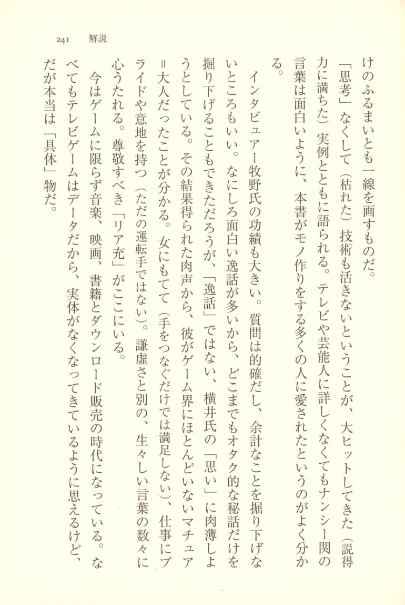
The idea that without "thinking," even seasoned technology cannot come alive is conveyed alongside persuasive, massively successful real-world examples. Just as Nancy Seki's words are entertaining even to those unfamiliar with television or celebrities, it's easy to see why this book has been loved by so many people who make things.
Interviewer Makino's contributions are also significant. His questions are precise, and he wisely refrains from digging into unnecessary tangents. Since there are so many fascinating anecdotes, he could easily have kept drilling down into nothing but otaku-style behind-the-scenes trivia, but instead he strives to get close to Yokoi's "thoughts" rather than mere "anecdotes." From the living voice captured as a result, one can see that Yokoi was a rare mature adult in the gaming world — a man who was popular with women (not content with merely holding hands), who took pride in his work and had real grit (not just a passenger along for the ride). Beyond his humility, there is a wealth of raw, vivid words that strike the heart. Here, in short, is a "riajuu" — a person fully engaged with real life — worthy of respect.
Today, not just games but music, film, and books have all entered the age of digital download sales. Since video games above all are data, it might seem as though their physical substance is disappearing. But in truth, games are tangible things.
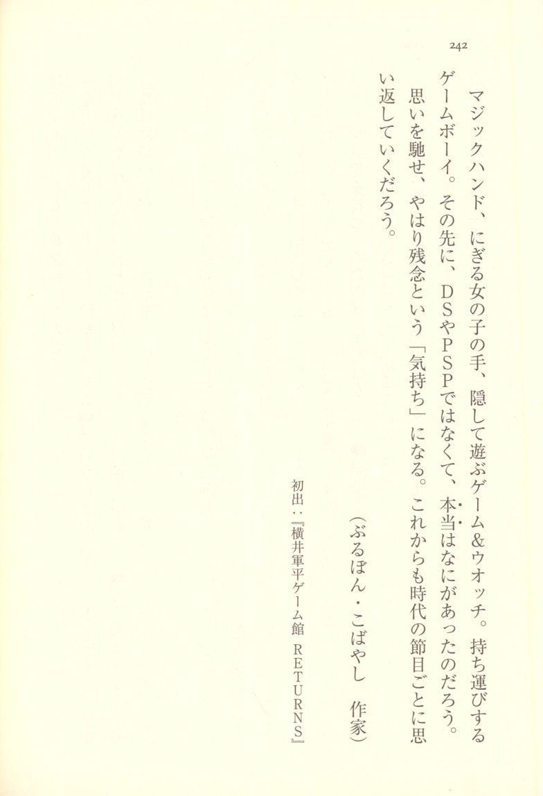
(Bourbon Kobayashi, author)
First published in: Gunpei Yokoi Game Kan RETURNS
 p.246 Gunpei Yokoi Works Chronology
p.246 Gunpei Yokoi Works Chronology
Compiled by the editorial department. Cooperation: Isao Yamazaki. ※ indicates produced works.
| Year | Works | Major Events | Hit Products Released That Year (Manufacturer) |
|------|-------|--------------|------------------------------------------------|
| 1966 (Showa 41) | Ultra Hand | Third Arab-Israeli War | Licca-chan Doll (Takara) |
| 1968 (Showa 43) | Ultra Machine | Kawabata Yasunari wins Nobel Prize in Literature; 300 Million Yen Robbery; Students expelled from occupied Yasuda Auditorium at University of Tokyo | Wanpaku Flipper Underwater Toy (Popy); Pager (Nippon Telegraph and Telephone Public Corporation) |
| 1969 (Showa 44) | Love Tester | Tomei Expressway opens | Asahi Pentax 6×7 (Asahi Optical) |
| 1970 (Showa 45) | Light Gun SP; Ele-Conga; N&B Block Crater | Japan World Exposition held; JAL "Yodo-go" Hijacking Incident | Mini Car "Tomica" (Tomy) |
| 1971 (Showa 46) | Ultra Scope; Light Phone LT | Okubo Kiyoshi serial murder case; Narita Airport opposition struggle | American Cracker (Asahi Toy); Karaoke (Inoue Daisuke) |
| 1972 (Showa 47) | Lefty RX; Time Shock | United Red Army Incident; Normalization of Japan-China diplomatic relations | Magic Pitch Baseball Game (Epoch) |  p.247 | Year | Works | Major Events | Hit Products Released That Year (Manufacturer) |
p.247 | Year | Works | Major Events | Hit Products Released That Year (Manufacturer) |
|------|-------|--------------|------------------------------------------------|
| 1973 (Showa 48) | Laser Clay (arcade) | Kim Dae-jung Incident; First Oil Crisis | Othello (Tsukuda) |
| 1974 (Showa 49) | Wild Gunman (arcade); Fascination (arcade, sample test only); Shooting Trainer (arcade) | Rescue of former Lieutenant Onoda; Giants' Nagashima retires | Gayla Kite (A.G. Industries); World's first camera with built-in flash (Konishiroku Photo Industry) |
| 1976 (Showa 51) | Light Gun Custom Series; Duck Hunt | Lockheed Scandal; Montreal Olympics | Video Cassette Recorder HR-3300 (JVC) |
| 1977 (Showa 52) | Battle Shark (arcade); Sky Hawk (arcade); Sea Hawk (arcade, sample test only) | Oh sets world record with 756th home run; Japan Airlines DC-8 hijacking incident | Instant Camera (Kodak); Atari 2600 (Atari, released in America) |
| 1978 (Showa 53) | Deadline (arcade); Fancy Ball (arcade, sample test only) | Narita New Airport opens; Japan-China Peace and Friendship Treaty signed | Space Invaders (Taito) |
| 1979 (Showa 54) | Chiritori; Ten Billion | Mitsubishi Bank shotgun hostage incident; Tokyo Summit | Walkman (Sony) |
| 1980 (Showa 55) | Game & Watch | Japan boycotts Moscow Olympics | Rubik's Cube (Tsukuda Original); Choro-Q (Takara) | 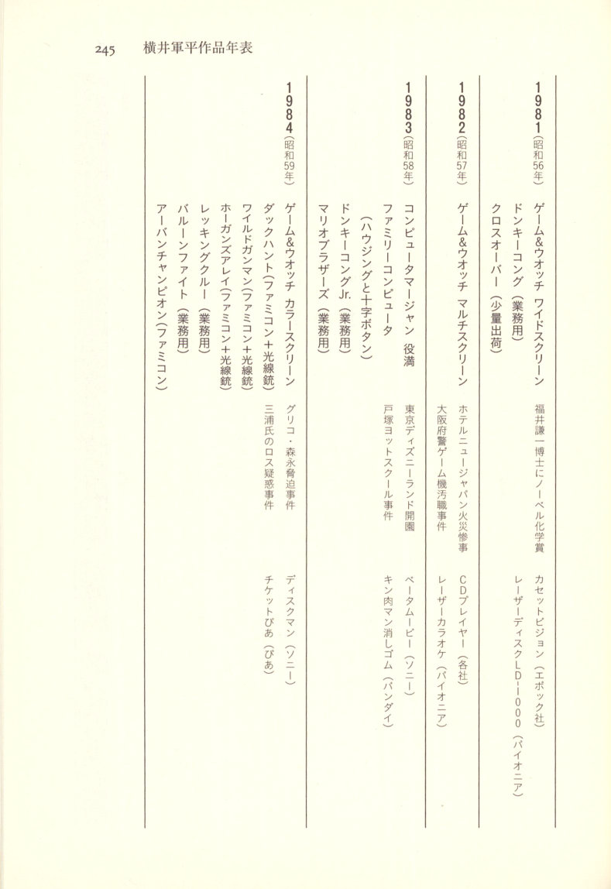
|------|-------|--------------|------------------------------------------------|
| 1981 (Showa 56) | Game & Watch Wide Screen; Donkey Kong (arcade); Cross Over (limited shipment) | Dr. Kenichi Fukui awarded Nobel Prize in Chemistry | Cassette Vision (Epoch); Laser Disc LD-1000 (Pioneer) |
| 1982 (Showa 57) | Game & Watch Multi Screen; Computer Mahjong Yakuman | Hotel New Japan fire disaster; Osaka Prefectural Police game machine corruption scandal | CD Player (various manufacturers); Laser Karaoke (Pioneer) |
| 1983 (Showa 58) | Family Computer (housing and D-pad); Donkey Kong Jr. (arcade); Mario Bros. (arcade) | Tokyo Disneyland opens; Totsuka Yacht School incident | Beta Movie (Sony); Kinnikuman Erasers (Bandai) |
| 1984 (Showa 59) | Game & Watch Color Screen; Duck Hunt (Famicom + Light Gun); Wild Gunman (Famicom + Light Gun); Hogan's Alley (Famicom + Light Gun); Wrecking Crew (arcade); Balloon Fight (arcade); Urban Champion (Famicom) | Glico-Morinaga extortion case; Miura Los Angeles murder suspicion case | Discman (Sony); Ticket Pia (Pia) | 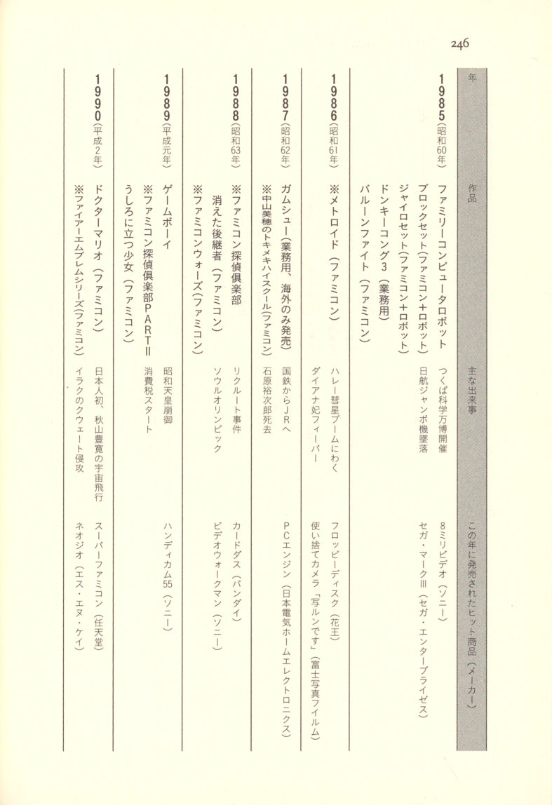
|------|-------|--------------|------------------------------------------------|
| 1985 (Showa 60) | Family Computer Robot; Block Set (Famicom + Robot); Gyro Set (Famicom + Robot); Donkey Kong 3 (arcade); Balloon Fight (Famicom) | Tsukuba Science Expo held; JAL jumbo jet crash | 8mm Video (Sony); Sega Mark III (Sega Enterprises) |
| 1986 (Showa 61) | ※ Metroid (Famicom) | Halley's Comet boom; Princess Diana fever | Floppy Disk (Kao); Disposable camera "Utsurun Desu" (Fuji Photo Film) |
| 1987 (Showa 62) | Gumshoe (arcade, overseas release only); ※ Nakayama Miho no Tokimeki High School (Famicom) | National Railways becomes JR; Ishihara Yujiro dies | PC Engine (NEC Home Electronics); Carddass (Bandai) |
| 1988 (Showa 63) | ※ Famicom Detective Club: The Missing Heir (Famicom); ※ Famicom Wars (Famicom) | Recruit scandal; Seoul Olympics | Video Walkman (Sony); Handycam 55 (Sony) |
| 1989 (Heisei 1) | Game Boy; ※ Famicom Detective Club Part II: The Girl Who Stands Behind (Famicom) | Death of Emperor Showa; Consumption tax starts | Super Famicom (Nintendo) |
| 1990 (Heisei 2) | Dr. Mario (Famicom); ※ Fire Emblem series (Famicom) | First Japanese in space — Toyohiro Akiyama's spaceflight; Iraq's invasion of Kuwait | Neo Geo (SNK) | 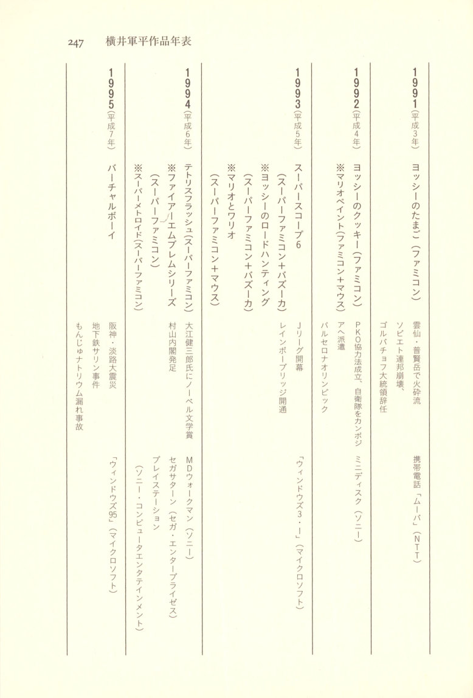
|------|-------|--------------|------------------------------------------------|
| 1991 (Heisei 3) | Yoshi's Egg (Famicom) | Pyroclastic flow at Mt. Unzen Fugendake; Collapse of the Soviet Union, President Gorbachev resigns | Mobile phone "Mova" (NTT) |
| 1992 (Heisei 4) | Yoshi's Cookie (Famicom); ※ Mario Paint (Famicom + Mouse) | PKO Cooperation Law enacted, Self-Defense Forces dispatched to Cambodia; Barcelona Olympics | MiniDisc (Sony) |
| 1993 (Heisei 5) | Super Scope 6 (Super Famicom + Bazooka); ※ Yoshi's Road Hunting (Super Famicom + Bazooka); ※ Mario & Wario (Super Famicom + Mouse) | J.League opens; Rainbow Bridge opens | Windows 3.1 (Microsoft) |
| 1994 (Heisei 6) | Tetris Flash (Super Famicom); ※ Fire Emblem series (Super Famicom); ※ Super Metroid (Super Famicom) | Oe Kenzaburo awarded Nobel Prize in Literature; Murayama Cabinet formed | MD Walkman (Sony); Sega Saturn (Sega Enterprises); PlayStation (Sony Computer Entertainment) |
| 1995 (Heisei 7) | Virtual Boy | Great Hanshin-Awaji Earthquake; Tokyo subway sarin attack; Monju sodium leak accident | Windows 95 (Microsoft) |  p.251 | 1996 (Heisei 8) | Game Boy Pocket | Cloned sheep Dolly is born | Tamagotchi (Bandai); NINTENDO 64 (Nintendo) |
p.251 | 1996 (Heisei 8) | Game Boy Pocket | Cloned sheep Dolly is born | Tamagotchi (Bandai); NINTENDO 64 (Nintendo) |
| 1997 (Heisei 9) | Kunekune'ccho; Henoheno | Kobe child murders (a.k.a. Sakakibara case); Hong Kong handover | Hybrid car "Prius" (Toyota Motor Corporation) |
Note: Following Gunpei Yokoi's death in 1997, the Game Boy Color (Nintendo) and Dreamcast (Sega) were released in 1998. In 1999, the WonderSwan (Bandai) was released, and GUNPEY (Koto), a software title supervised by Yokoi, was one of its launch titles. The unrealized home "driving game" dates back to 1966.